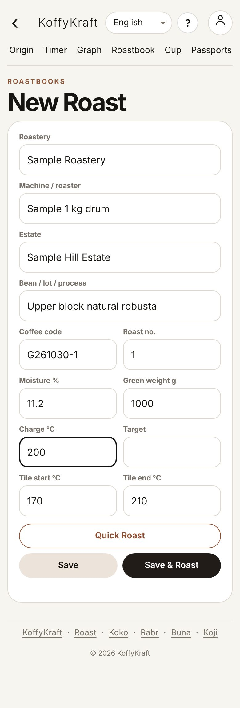
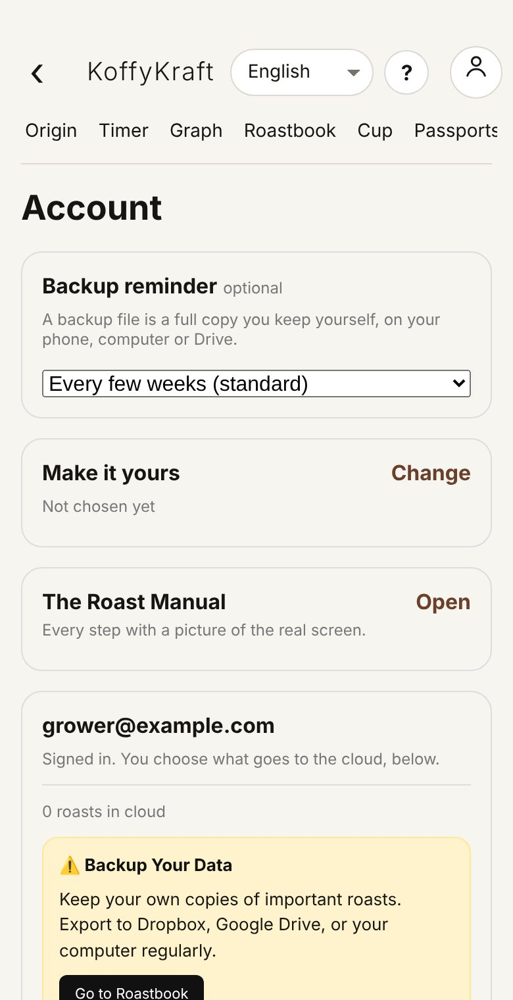

Step 1 · Open Roast for the first time
Open Chrome (Android) or Safari (iPhone) and go to roast.koffykraft.coffee. The first time, Roast opens on Home with the words Coffee, from farm to cup.

Seen fromOn your phone, step 1
A subject, followed along the whole path
From the first tap to your own pages.
Step 1 · Open Roast for the first time
Open Chrome (Android) or Safari (iPhone) and go to roast.koffykraft.coffee. The first time, Roast opens on Home with the words Coffee, from farm to cup.
Seen fromOn your phone, step 1
Step 2 · Put Roast on my home screen
Put it on your home screen. On an iPhone: the Share button at the bottom of Safari, then Add to Home Screen. On Android: the ⋮ menu at the top right of Chrome, then Add to home screen. These menus belong to the phone's browser, so their words can differ a little.
Seen fromOn your phone, step 2
Step 3
Open Roast from the new icon. It now opens on its own, without the browser's address bar.
Seen fromOn your phone, step 3
Tip
Open it once while you have a signal. That is when the phone keeps its copy of the app. After that it opens even in airplane mode.
Seen fromOn your phoneNothing gets lost
What it is · Decide whether I need an account
Everything works without an account. The difference is where the records live.
| No account | Signed in | |
|---|---|---|
| Where records live | Only on this phone | On this phone and in your private account |
| Another phone sees them | No | Yes, after signing in there with the same email |
| If the phone is lost or reset | Gone, unless you saved a backup file | Still in your account |
| Cost | Nothing | Nothing |
Seen fromOn your phoneNothing gets lost
Step 4
To carry on without one, do nothing: just start using the app. The account is there when you want it: tap the round person button at the top right, then Account and sign-in.

Seen fromOn your phone, step 4
Step 5 · Sign in with my email
To sign in: on the Account page, find Private cloud account and type your email in the Email box. There is no password; each time, Roast emails you a 6-digit code.

Step 6
Read the privacy notice (the link in the sentence beside the tick box). It says what is kept, for how long, and what happens to your records if KoffyKraft closes. If you agree, tick the box and tap Send sign-in code. You will see 6-digit code sent to your email, and a box for the code.

Step 7
Find the sign-in email, type the 6 digits in the 6-digit code box, and tap Verify & sign in. The page reloads and you are signed in. Records already on this phone go to your account, and records from your other phones come in.
Seen fromOn your phone, step 7
Watch out
Without the tick, nothing is sent and the page asks you to read and tick the privacy notice first. After a code is sent, the button rests for 30 seconds before it sends another. Check your spam folder before tapping again.
Seen fromOn your phone
Step 1
The first time, Roast opens on Home: every part of the app is one tap away from here. Across the top, on every page: KoffyKraft (back to Home), the language box, the ? and the round person button. Below them, the menu scrolls sideways.

Tip
The language box puts the overviews and explanations into Malayalam, Kannada, Tamil, Spanish or Portuguese. Buttons, field names and numbers stay in English, so this manual still matches what you see.
Step 3 · Put my own pages first
Open Make it yours from Home or from Account. It asks four questions so the pages you use most come first. Nothing is hidden: everything else stays one tap away.

Seen fromYour first day, step 3
Step 4
What do you do? Tick all that fit: Grow, Process, Roast, Brew, Taste, Buy or sell, Teach or learn. How deep? Casual, Keen or Professional. Who uses it? Just me, A few of us or A business; with more than one person, Team joins your pages. Open the app on: the page Roast opens on from now on.

Seen fromYour first day, step 4
Step 5
Tap Show my pages. You land on Now, and the menu changes on every page: Now, then your own pages (up to seven), then All and Account. Before you answer, the menu stays as it was.
What it is · Choose how many boxes the forms show
How deep? decides how many boxes a form shows. Casual shows the main boxes, Keen a few more (picking, ripeness, Brix, grade), Professional every box. A box that already holds something always shows. On any form, Show all boxes brings back the rest for that visit, and you can change your answer any time on Account.

Seen fromYour first dayFinding your way
What it is
Every other record points back to a plot. A harvest names the plots it was picked from; a run takes its cherry from harvests; a green lot comes from a run. Add the estate and its plots once, and every bag can be traced back to the ground it grew on.
Step 2 · Add my estate
Tap + Estate. Only the Estate name * is needed; add the Village / locality, District, State / region, Country and Total area if you like. Further down, the producer's Postal address, Phone and Email are what a European buyer asks for. Tap Save.

Step 3 · Add a plot
Tap + Plot. Pick the estate, give a Block if you use them, and a Plot name / code * such as U1. Save, then open the plot again to fill in the rest at your own pace.
What it is
Field log and Weather, like Team, Jobs, Sales and money, and Land and dues, keep their records in your account, so every phone you sign in on sees the same list. Entries made with no signal wait on the phone and are sent when it is back online; Team, Jobs and Land and dues mark them waiting to send until then.
Seen fromEstates and plotsNothing gets lost
Step 1 · Choose the name on my passports
Open Passports from the menu. Under Name shown on your passports, type your farm, estate or roastery name and tap Save. Your email is never shown.

Seen fromPassports and selling into Europe, step 1Records you can trust
Step 2 · Set up a roast before I start
On New Roast, fill what you know: Roastery, Machine / roaster, Estate, Bean / lot / process, Coffee code, Roast no., Moisture %, Green weight g, Charge °C and Target. Tile start °C and Tile end °C set the range of the temperature tiles in the timer. Save keeps the setup. Save & Roast keeps it and opens the timer. Quick Roast starts a fresh roast: the coffee boxes are cleared, and your roastery, machine and tile range stay. Roasts you have saved are never touched.

What it is
These pages keep their records in your account, so every phone you sign in on sees the same list. Without an account they ask you to sign in. Entries made with no signal wait on the phone and are sent when it is back online.
Step 1 · Add a worker
Open Team, then Workers, and tap + Worker. Give the name, role, how they are paid (by the day, month, hour or piece) and the rate. More details holds the address, an emergency contact, how wages are paid, skills and task.

Seen fromRunning the business, step 1
Step 9 · Add or edit the names forms offer
Open Add or edit names (from Home or Account). Each list, such as Products, Buyers, Suppliers and payees, Transporters, Units and Row kinds, holds the names every drop-down offers, so everyone picks the same name. Add a name and Add; Edit renames, Hide takes it off the lists. A name typed under "Other" joins the list on its own.

Step 10 · Put my business details on payment requests
At the top of the names lists, My business holds your own name, GSTIN (your GST registration number), address, UPI ID and bank, used on payment requests. Tap a buyer, supplier or transporter to keep their GSTIN, address, phone, bank, UPI and credit days.
Seen fromRunning the business, step 10
Step 1 · Choose what goes to the cloud
Signed in, open Account. Under Cloud sync, each section (Origin, Roasts, Cup) has Off, Selected and All. Off keeps it on this phone. Selected sends only the records you tap Save to cloud on. All sends every record you save. Each section shows how many records are in the cloud.

What it is
Signed in, the top of Account shows your email and how many roasts are in the cloud, your backup reminder, Make it yours, and Sign out.

Seen fromYour records
What it is
The sign-in code has not come. Wait a minute and check the spam folder. The Send sign-in code button rests for 30 seconds after a code is sent, so a second tap too soon does nothing. Check the email address for a typing slip.
What it is
The app looks out of date. New versions arrive by themselves. On Account, App version has Check for updates.